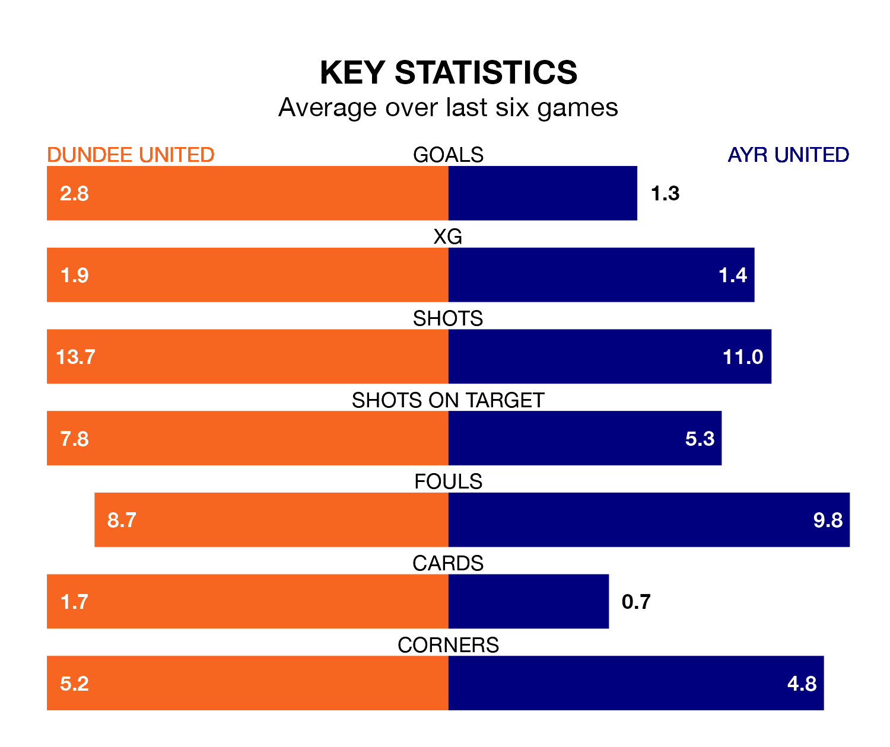

Dundee United are heavy favourites to keep all three points at home in Saturday's kick-off against Ayr United.
The Terrors, who sit top of Scottish Championship with 13 games played, are priced at 1.5 to seal victory at Tannadice Park.
Sitting five places and 17 points behind them in the table, Ayr are 5.6 to win with *Betting Company*, while the draw is at 4.4.
With 33 goals in 13 games so far this season, Dundee are the league's highest scorers with 2.5 goals per game. And they are conceding fewer than average, letting in six goals at a rate of 0.5 per game.
Ayr, meanwhile, are below average scorers, with 1.3 goals per game, compared to a league average of 1.4. They have conceded 1.9 goals per game.
With Jack Walton between the sticks, Dundee United can rely on one of the league's safest pair of hands. He has kept seven clean sheets in his 13 appearances this season, and no 'keeper has prevented the opposition scoring more often in Scottish Championship.
In Ayr United's net, Charlie Albinson has two clean sheets in 11 games. He has conceded a goal every 52 minutes, four times as often as the 195 minutes between goals for Walton.
The Terrors are in good form in Scottish Championship, with four wins and two draws from their last six games.
With two wins and two draws over that period, the Honest Men's form is much worse – they have taken eight points from 18, compared to the home team's 14.
In the last five years, Dundee and Ayr have played each other on seven occasions. Dundee won three of them, Ayr two, and they drew twice.
On average, the Terrors scored 1.4 goals and the Honest Men 0.7 in those matches.
Their last meeting was on August 26, when Dundee won 3-0 away.
Dundee's last match was on November 10, a 2-1 win against Dunfermline Athletic, with Christopher Robert Mochrie and Kai Fotheringham getting the goals for the Terrors.
Ayr lost 3-1 against Inverness CT last time out, on November 11, with Jamie Murphy on the scoresheet.
